原味燉品屋對面還有另外一家一樣賣燉品的，根據新竹友人表示，這家才是好吃的店
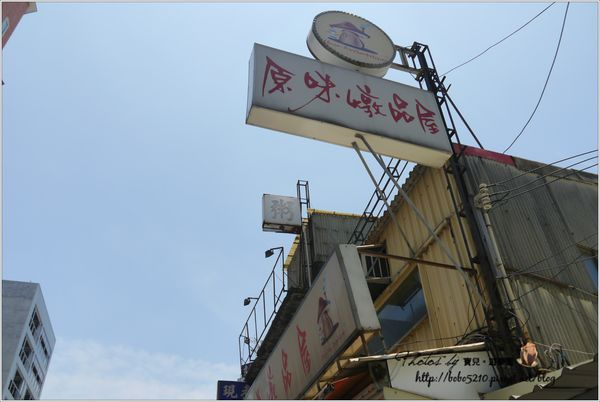巷子旁邊有停車場，開車來不用擔心，給一個大讚
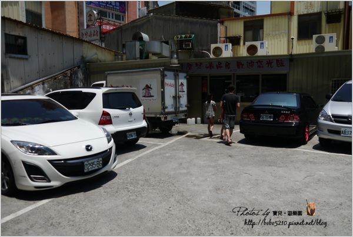燉品屋顧名思義當然就是賣燉品的店 賣的東西很簡單，湯品就是各式有排骨湯和雞湯 竹筍、芋頭、和蓮藕有限定季節 我非常愛喝雞湯和燉湯，不管是炎熱的大夏天還是冬天都沒差
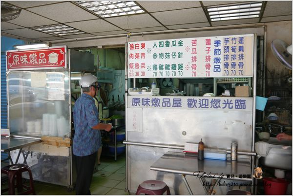門口店面不大但室內空間很大，進來後再點餐就可以 湯品價位都是70元
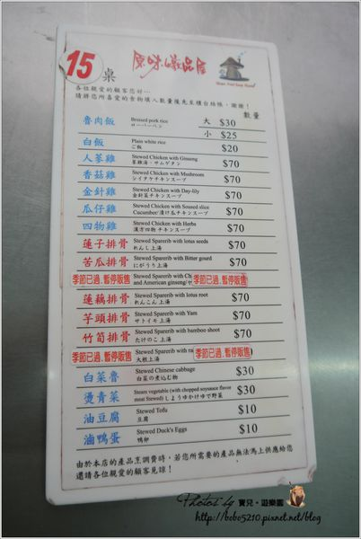我們點了竹筍排骨湯、香菇雞湯、燙青菜和白菜魯
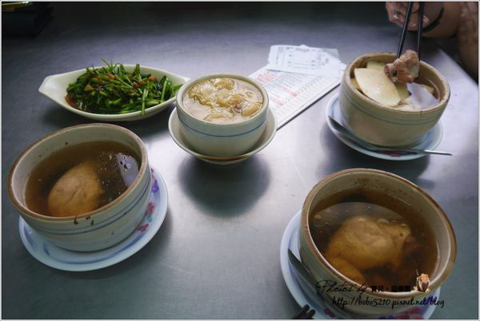自從開始認真寫部落格後，跟我比較熟或比較要好的朋友 餐點送上來後第一件事，就是往我前面一推『妳先拍照吧！』『拍好了沒?我好餓喔！』 真心感謝這些朋友，寧願先餓肚子，忍受每次吃東西都有個人像神經病的拍照 因為他們的的體諒和幫忙，我才有那麼多食記可以分享阿！ 先來介紹這個白菜魯，來自新竹的孫小姐推薦的 原本覺的白菜魯不就這樣，結果意外的超好吃 一直很怕吃到油膩的白菜魯，但這裡的不油膩！
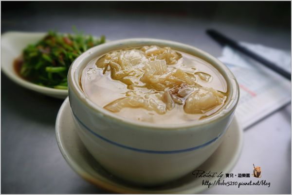竹筍排骨湯是季節性商品，現在正是竹筍好吃的時候 一定要來一碗的
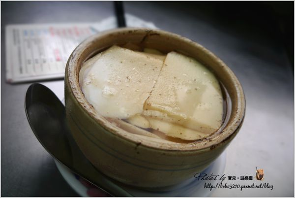滿滿的竹筍也太幸福了吧！ 整碗都被竹筍附蓋，我偷吃了朋友碗裡不少竹筍XDD
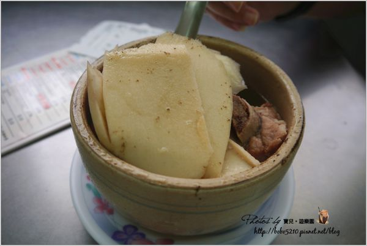排骨也燉的好入口，湯頭很清味道又夠
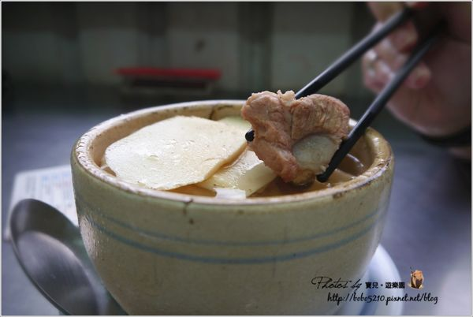我自己點的是香菇雞湯，超愛喝雞湯的 這雞湯喝的到濃郁，能喝到這麼好喝的雞湯真是太幸福了 下重本的用了整隻雞腿，很對的起它的價格
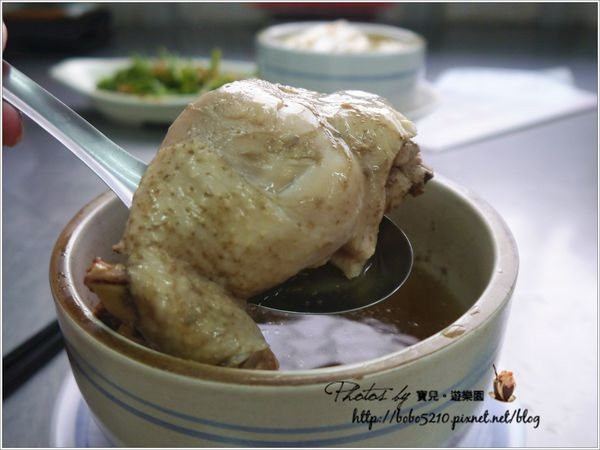燉品屋最大的特色不是花俏的調味，而是用心長時間熬出精華 好喝的雞湯需要耐心慢慢烹煮，湯品就應該這樣阿！
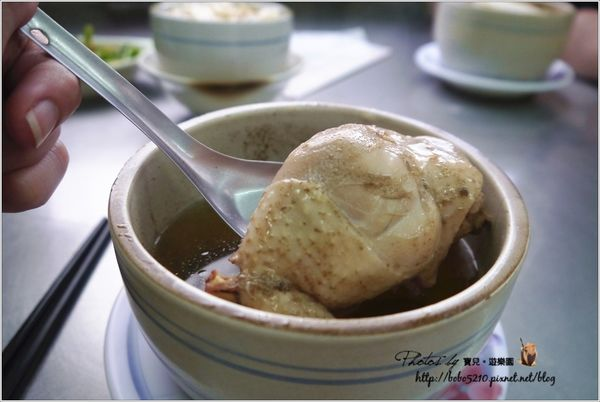每餐都要吃青菜才是乖孩子
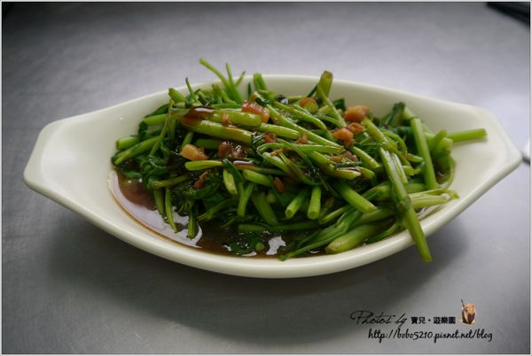這次消費的價格是270，平均一個人才90元 雖然是大熱天但燉品屋還是滿滿滿的人，可見他的魅力 最棒的是它是24小時營業，又在交流道旁，以後隨時路過都可以上一碗。
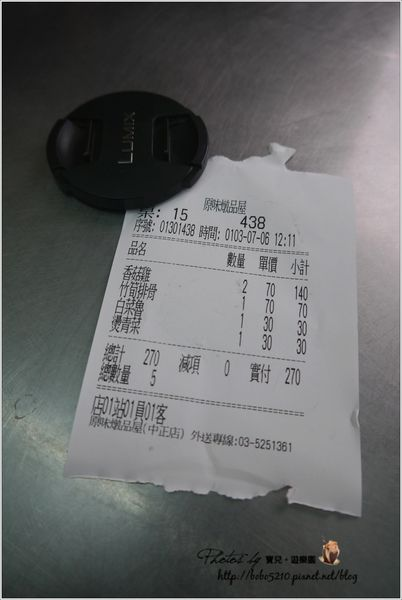飯後甜點轉戰竹北的嵩山豆花 會知道嵩山豆花是因為上次看格友小綠豆的文章被燒到了 我也超愛吃豆花的阿!(吶喊) (其實是什麼都愛吃吧) 既然都來到新竹，就要吃一下才對得起自己阿
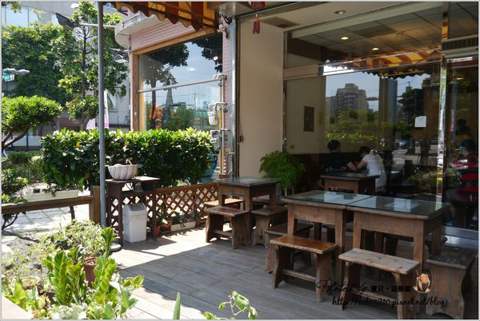 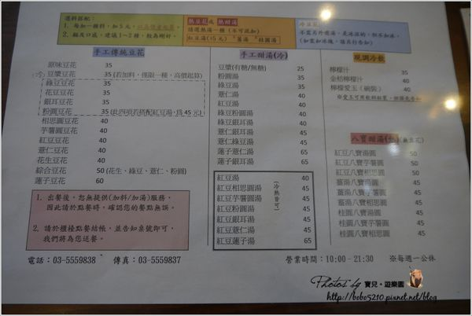看不清楚請看這，價位真的不貴
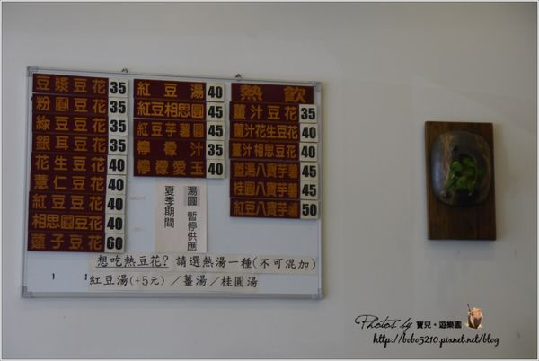一樣人客滿滿滿，新竹人果然都知道哪裡有好吃的
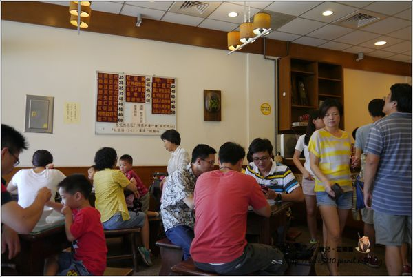我點了豆漿豆花，果然名不虛傳 豆花好滑嫩，一不小心就滑出去了!! 而且大碗又不會太甜，愛死了這個豆花
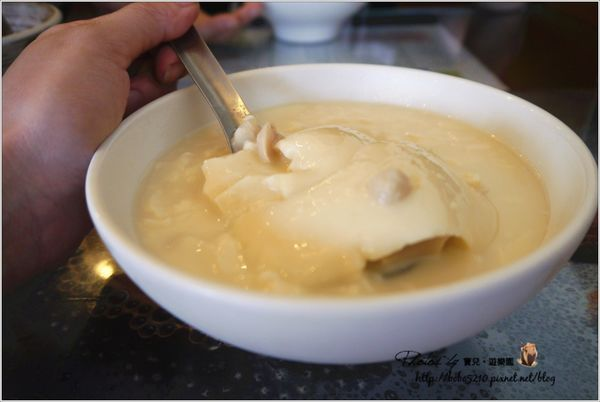35元可以吃到這麼大碗又好吃的豆花簡直太超值了 豆花豆漿真的好香(大拇哥) 以後路過也一定要來一碗！
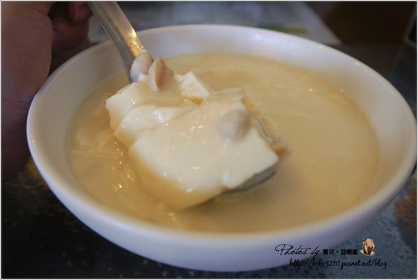引自:http://bobo5210.pixnet.net/blog/post/182959932-%E3%80%90%E7%BE%8E%E9%A3%9F%E3%80%91%E6%96%B0%E7%AB%B9%E3%80%82%E5%8E%9F%E5%91%B3%E7%87%89%E5%93%81%E5%B1%8B%EF%BC%8C24%E5%B0%8F%E6%99%82%E9%83%BD%E5%8F%AF%E4%BB%A5%E5%96%9D